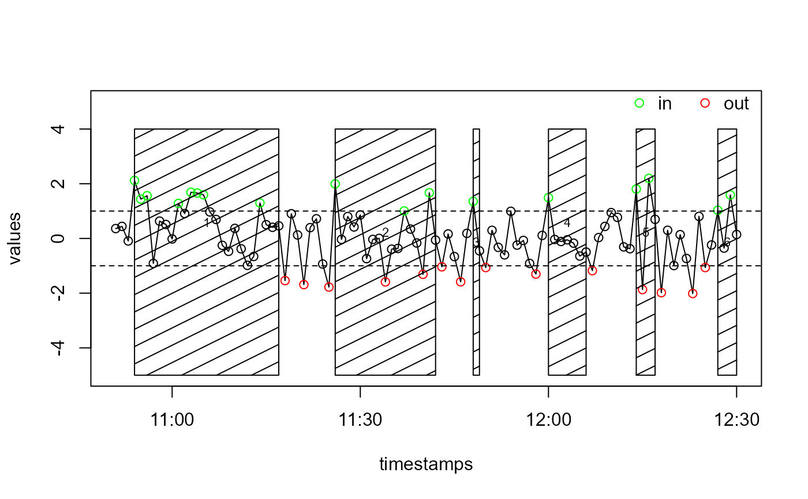

Get Events by Evaluation of a State Variable
Usage
eventsByState(timestamps, states, eventSeparationTime, signalWidth,
in.state = 1, out.state = 0)Arguments
- timestamps
vector of timestamps (POSIXct)
- states
vector of state values in which each element corresponds to one timestamp in timstamps. If the state is the value given in in.state) the corresponding times are considered to be lying within an event. If the state is the value given in out.state) the corresponding times are considered to be lying out of an event. For values that are neither of the values given in in.state and out.state, respectively, the corresponding timestamps are considered to either belong to an event or not, depending on the previous clear state ("in" or "out") in the sequence of states.
- eventSeparationTime
same meaning as in
hsEvents- signalWidth
see description in
hsEvents- in.state
value in states indicating the state "in event". Default: 1
- out.state
value in states indicating the state "out of event". Default: 0
Value
event characteristics (begin, end, duration, ...) in a data frame, as
returned by hsEvents
Examples
# Generate random timestamps
starttime <- as.POSIXct("2015-03-12 10:51")
n <- 100
timestamps <- seq(starttime, by = 60, length.out = n)
values <- rnorm(n)
# Give values above 1 the state "in" and values below -1 the state "out"
states <- rep("", times = n)
states[values > 1] <- "in"
states[values < -1] <- "out"
# Generate the events
events <- eventsByState(
timestamps, states, eventSeparationTime = 5 * 60, in.state = "in",
out.state = "out", signalWidth = 60
)
# Prepare a vector of colours
col <- rep("black", length(states))
col[states == "in"] <- "green"
col[states == "out"] <- "red"
# Plot the values, the threshold lines and a legend
graphics::plot(timestamps, values, type = "l", ylim = c(-5, 5))
points(timestamps, values, col = col)
graphics::abline(h = c(1, -1), lty = 2)
legend(
"topright", bty = "n", legend = c("in", "out"), col = c("green", "red"),
pch = 1, bg = "white", horiz = TRUE
)
# Plot the event borders
ganttPlotEvents(events, add = TRUE, y1 = -5, y2 = 4)
